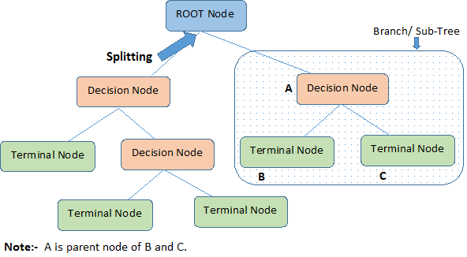

Decision Trees
Contents
import numpy as np
import pandas as pd
import matplotlib.pyplot as plt
import seaborn as sns
from sklearn.preprocessing import OrdinalEncoder
from sklearn.compose import make_column_transformer, make_column_selector
from sklearn.pipeline import make_pipeline
from sklearn.model_selection import cross_val_score, cross_validate
from sklearn.tree import DecisionTreeRegressor, DecisionTreeClassifier
from sklearn.ensemble import BaggingClassifier, GradientBoostingRegressor, RandomForestRegressor
from sklearn.ensemble import RandomForestClassifier
from sklearn.datasets import fetch_california_housing
Decision Trees#
A thought experiment: When you wake up and decide to attend class there are many factors in your decision.
The grade you want to get
Did you get a good night’s sleep
Do you have a lot of other work to do
Do you think the class is important
Are you feeling sick …
Each of these affects the outcome of if you show up to class or not ... You can try to how much each of these features affects decision making
Let’s assume your decision is highly based on the weather


Nodes: split for a value of a particular attribute
Edges: results of a particular decision
Root: a node that performs the first split
Leaves: the terminal output of each split
How do we choose how to split the data?
We want to choose the splits that maximize the amount of information gained on the split
Entropy: If a sample is all of one class, entropy = 0, if it is evenly divided entropy = 1.
We need to compute two entropy for an attribute
Entropy for a single class $\(E(T) = \sum_{i=1}^c -p_i\log_{2}{p_i}\)$
The entropy for two attributes: $\( E(T,X) = \sum\_{c\in X} P(c)E(c)\)$
n.b: \(\in\) means part of
Information Gained: The reduction in the amount of entropy after conducting a particular split
Calculate the entropy of the target … Did you go to class?
The dataset is split on different attributes and the entropy for each branch is calculated. (equation for the entropy of two attributes)
Information gained is calculated as: $\( Information \ Gained = E(T) - E(T,X) \)$
Select the split with the largest information gained
Repeat this process until you reach a state with an entropy of 0, this is a leaf node!
As you could imagine this process is computationally intensive \(\rightarrow\) You can improve the performance using a random forest
Random Forest#
Random forests rely on decision trees to reduce computational complexity relying on bagging algorithms
when training a tree, the search only on a subset of the original features taken at random.
The goal is to inject additional randomization into the learning procedure to try to decorrelate the prediction errors of the individual trees.
Therefore, random forests are using randomization on both axes of the data matrix:
by bootstrapping samples for each tree in the forest;
randomly selecting a subset of features at each node of the tree.
Example: Adults Census Data#
We will illustrate the usage of a random forest classifier on the adult census dataset.
adult_census = pd.read_csv("./data/adult-census.csv")
target_name = "class"
data = adult_census.drop(columns=[target_name, "education-num"])
target = adult_census[target_name]
We will encode this data as we did before
categorical_encoder = OrdinalEncoder(
handle_unknown="use_encoded_value", unknown_value=-1
)
preprocessor = make_column_transformer(
(categorical_encoder, make_column_selector(dtype_include=object)),
remainder="passthrough"
)
We will first give a simple example where we will train a single decision tree classifier and check its generalization performance via cross-validation.
tree = make_pipeline(preprocessor, DecisionTreeClassifier(random_state=0))
scores_tree = cross_val_score(tree, data, target)
print(f"Decision tree classifier: "
f"{scores_tree.mean():.3f} ± {scores_tree.std():.3f}")
Decision tree classifier: 0.820 ± 0.006
Bagging Classifier#
We construct a BaggingClassifier with a decision tree classifier as the base model.
A Bagging classifier is an ensemble meta-estimator that fits base classifiers each on random subsets of the original dataset and then aggregates their predictions (either by voting or by averaging) to form a final prediction.
Such a meta-estimator can typically be used as a way to reduce the variance of a black-box estimator (e.g., a decision tree), by introducing randomization into its construction procedure and then making an ensemble out of it.
bagged_trees = make_pipeline(
preprocessor,
BaggingClassifier(
base_estimator=DecisionTreeClassifier(random_state=0),
n_estimators=50, n_jobs=2, random_state=0,
)
)
scores_bagged_trees = cross_val_score(bagged_trees, data, target)
print(f"Bagged decision tree classifier: "
f"{scores_bagged_trees.mean():.3f} ± {scores_bagged_trees.std():.3f}")
Bagged decision tree classifier: 0.846 ± 0.005
Note that the generalization performance of the bagged trees is already much better than the performance of a single tree.
Random Forest#
Now, we will use a random forest. You will observe that we do not need to
specify any base_estimator because the estimator is forced to be a decision
tree. Thus, we just specify the desired number of trees in the forest.
random_forest = make_pipeline(
preprocessor,
RandomForestClassifier(n_estimators=50, n_jobs=2, random_state=0)
)
scores_random_forest = cross_val_score(random_forest, data, target)
print(f"Random forest classifier: "
f"{scores_random_forest.mean():.3f} ± "
f"{scores_random_forest.std():.3f}")
Random forest classifier: 0.851 ± 0.004
It seems that the random forest is performing slightly better than the bagged trees possibly due to the randomized selection of the features which decorrelates the prediction errors of individual trees and as a consequence makes the averaging step more efficient at reducing overfitting.
Details about default hyperparameters#
For random forests, it is possible to control the amount of randomness for
each split by setting the value of max_features hyperparameter:
max_features=0.5means that 50% of the features are considered at each split;max_features=1.0means that all features are considered at each split which effectively disables feature subsampling.
By default, RandomForestRegressor disables feature subsampling while
RandomForestClassifier uses max_features=np.sqrt(n_features). These
default values reflect good practices given in the scientific literature.
However, max_features is one of the hyperparameters to consider when tuning
a random forest:
too much randomness in the trees can lead to under fitted base models and can be detrimental for the ensemble as a whole, too little randomness in the trees leads to more correlation of the prediction errors and as a result reduce the benefits of the averaging step in terms of overfitting control.
In scikit-learn, the bagging classes also expose a max_features parameter.
However, BaggingClassifier and BaggingRegressor are agnostic with respect
to their base model and therefore random feature subsampling can only happen
once before fitting each base model instead of several times per base model
as is the case when adding splits to a given tree.
We summarize these details in the following table:
Ensemble model class |
Base model class |
Default value for |
Features subsampling strategy |
|---|---|---|---|
|
User specified (flexible) |
|
Model level |
|
|
|
Tree node level |
|
User specified (flexible) |
|
Model level |
|
|
|
Tree node level |
Random Forest Regression#
You can also use random forests for regression problems
Let’s start by generating some non-linear data
# Create a random number generator that will be used to set the randomness
rng = np.random.RandomState(0)
def generate_data(n_samples=50):
"""Generate synthetic dataset. Returns `data_train`, `data_test`,
`target_train`."""
x_max, x_min = 1.4, -1.4
len_x = x_max - x_min
x = rng.rand(n_samples) * len_x - len_x / 2
noise = rng.randn(n_samples) * 0.3
y = x ** 3 - 0.5 * x ** 2 + noise
data_train = pd.DataFrame(x, columns=["Feature"])
data_test = pd.DataFrame(np.linspace(x_max, x_min, num=300),
columns=["Feature"])
target_train = pd.Series(y, name="Target")
return data_train, data_test, target_train
data_train, data_test, target_train = generate_data()
sns.scatterplot(x=data_train["Feature"], y=target_train, color="black",
alpha=0.5)
_ = plt.title("Synthetic regression dataset")
We will start by creating a decision tree regressor. We will set the depth of the tree so that the resulting learner will underfit the data.
tree = DecisionTreeRegressor(max_depth=3, random_state=0)
tree.fit(data_train, target_train)
target_train_predicted = tree.predict(data_train)
target_test_predicted = tree.predict(data_test)
Using the term “test” here refers to data that was not used for training. It should not be confused with data coming from a train-test split, as it was generated in equally-spaced intervals for the visual evaluation of the predictions.
# plot the data
sns.scatterplot(x=data_train["Feature"], y=target_train, color="black",
alpha=0.5)
# plot the predictions
line_predictions = plt.plot(data_test["Feature"], target_test_predicted, "--")
# plot the residuals
for value, true, predicted in zip(data_train["Feature"],
target_train,
target_train_predicted):
lines_residuals = plt.plot([value, value], [true, predicted], color="red")
plt.legend([line_predictions[0], lines_residuals[0]],
["Fitted tree", "Residuals"])
_ = plt.title("Prediction function together \nwith errors on the training set")
Our initial tree was not expressive enough to handle the complexity of the data.
Gradient-boosting decision tree (GBDT)#
GBDT will fit a decision tree on the residual error (hence the name “gradient”) of the previous tree. Therefore, each new tree in the ensemble predicts the error made by the previous learner instead of predicting the target directly.
In a gradient-boosting algorithm, the idea is to create a second tree that, given the same data data, will try
to predict the residuals instead of the vector target. We would therefore have a tree that is able to predict the errors made by the initial tree.
Let’s train such a tree.
residuals = target_train - target_train_predicted
tree_residuals = DecisionTreeRegressor(max_depth=5, random_state=0)
tree_residuals.fit(data_train, residuals)
target_train_predicted_residuals = tree_residuals.predict(data_train)
target_test_predicted_residuals = tree_residuals.predict(data_test)
sns.scatterplot(x=data_train["Feature"], y=residuals, color="black", alpha=0.5)
line_predictions = plt.plot(
data_test["Feature"], target_test_predicted_residuals, "--")
# plot the residuals of the predicted residuals
for value, true, predicted in zip(data_train["Feature"],
residuals,
target_train_predicted_residuals):
lines_residuals = plt.plot([value, value], [true, predicted], color="red")
plt.legend([line_predictions[0], lines_residuals[0]],
["Fitted tree", "Residuals"], bbox_to_anchor=(1.05, 0.8),
loc="upper left")
_ = plt.title("Prediction of the previous residuals")
We see that this new tree only manages to fit some of the residuals.
We will focus on a specific sample from the training set (i.e. we know that the sample will be well-predicted using two successive trees).
Let’s first select this sample in data_train.
sample = data_train.iloc[[-2]]
x_sample = sample['Feature'].iloc[0]
target_true = target_train.iloc[-2]
target_true_residual = residuals.iloc[-2]
Let’s plot the previous information and highlight our sample of interest. Let’s start by plotting the original data and the prediction of the first decision tree.
# Plot the previous information:
# * the dataset
# * the predictions
# * the residuals
sns.scatterplot(x=data_train["Feature"], y=target_train, color="black",
alpha=0.5)
plt.plot(data_test["Feature"], target_test_predicted, "--")
for value, true, predicted in zip(data_train["Feature"],
target_train,
target_train_predicted):
lines_residuals = plt.plot([value, value], [true, predicted], color="red")
# Highlight the sample of interest
plt.scatter(sample, target_true, label="Sample of interest",
color="tab:orange", s=200)
plt.xlim([-1, 0])
plt.legend(bbox_to_anchor=(1.05, 0.8), loc="upper left")
_ = plt.title("Tree predictions")
Now, let’s plot the residual information. We will plot the residuals computed from the first decision tree and show the residual predictions.
# Plot the previous information:
# * the residuals committed by the first tree
# * the residual predictions
# * the residuals of the residual predictions
sns.scatterplot(x=data_train["Feature"], y=residuals,
color="black", alpha=0.5)
plt.plot(data_test["Feature"], target_test_predicted_residuals, "--")
for value, true, predicted in zip(data_train["Feature"],
residuals,
target_train_predicted_residuals):
lines_residuals = plt.plot([value, value], [true, predicted], color="red")
# Highlight the sample of interest
plt.scatter(sample, target_true_residual, label="Sample of interest",
color="tab:orange", s=200)
plt.xlim([-1, 0])
plt.legend()
_ = plt.title("Prediction of the residuals")
For our sample of interest, our initial tree is making an error (small residual).
When fitting the second tree, the residual in this case is perfectly fitted and predicted.
print(f"True value to predict for "
f"f(x={x_sample:.3f}) = {target_true:.3f}")
y_pred_first_tree = tree.predict(sample)[0]
print(f"Prediction of the first decision tree for x={x_sample:.3f}: "
f"y={y_pred_first_tree:.3f}")
print(f"Error of the tree: {target_true - y_pred_first_tree:.3f}")
True value to predict for f(x=-0.517) = -0.393
Prediction of the first decision tree for x=-0.517: y=-0.145
Error of the tree: -0.248
As we visually observed, we have a small error. Now, we can use the second tree to try to predict this residual.
print(f"Prediction of the residual for x={x_sample:.3f}: "
f"{tree_residuals.predict(sample)[0]:.3f}")
Prediction of the residual for x=-0.517: -0.248
We see that our second tree is capable of predicting the exact residual
(error) of our first tree. Therefore, we can predict the value of x by
summing the prediction of all the trees in the ensemble.
y_pred_first_and_second_tree = (
y_pred_first_tree + tree_residuals.predict(sample)[0]
)
print(f"Prediction of the first and second decision trees combined for "
f"x={x_sample:.3f}: y={y_pred_first_and_second_tree:.3f}")
print(f"Error of the tree: {target_true - y_pred_first_and_second_tree:.3f}")
Prediction of the first and second decision trees combined for x=-0.517: y=-0.393
Error of the tree: 0.000
We chose a sample for which only two trees were enough to make the perfect prediction.
One needs to add several trees to the ensemble to successfully correct the error (i.e. the second tree corrects the first tree’s error, while the third tree corrects the second tree’s error and so on).
Example: Gradient-Boosted Random Forest Regression#
We will compare the generalization performance of random forest and gradient boosting on the California housing dataset.
Step 1: Load the Data#
data, target = fetch_california_housing(return_X_y=True, as_frame=True)
target *= 100 # rescale the target in k$
Step 2: Builds the Model#
gradient_boosting = GradientBoostingRegressor(n_estimators=200)
cv_results_gbdt = cross_validate(
gradient_boosting, data, target, scoring="neg_mean_absolute_error",
n_jobs=10,
)
Step 3: Views the Results#
print("Gradient Boosting Decision Tree")
print(f"Mean absolute error via cross-validation: "
f"{-cv_results_gbdt['test_score'].mean():.3f} ± "
f"{cv_results_gbdt['test_score'].std():.3f} k$")
print(f"Average fit time: "
f"{cv_results_gbdt['fit_time'].mean():.3f} seconds")
print(f"Average score time: "
f"{cv_results_gbdt['score_time'].mean():.3f} seconds")
Gradient Boosting Decision Tree
Mean absolute error via cross-validation: 46.409 ± 2.915 k$
Average fit time: 4.990 seconds
Average score time: 0.007 seconds
Step 4: Comparison to Random Forest Regressor#
random_forest = RandomForestRegressor(n_estimators=200, n_jobs=-1)
cv_results_rf = cross_validate(
random_forest, data, target, scoring="neg_mean_absolute_error",
n_jobs=2,
)
print("Random Forest")
print(f"Mean absolute error via cross-validation: "
f"{-cv_results_rf['test_score'].mean():.3f} ± "
f"{cv_results_rf['test_score'].std():.3f} k$")
print(f"Average fit time: "
f"{cv_results_rf['fit_time'].mean():.3f} seconds")
print(f"Average score time: "
f"{cv_results_rf['score_time'].mean():.3f} seconds")
Random Forest
Mean absolute error via cross-validation: 46.627 ± 4.578 k$
Average fit time: 3.192 seconds
Average score time: 0.083 seconds
In terms of computation performance, the forest can be parallelized and will benefit from using multiple cores of the CPU. In terms of scoring performance, both algorithms lead to very close results.
However, we see that gradient boosting is a very fast algorithm to predict compared to random forest. This is due to the fact that gradient boosting uses shallow trees.